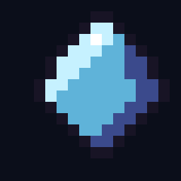

你的浏览器不支持 canvas。
需要启用 JavaScript。
← 返回主页

REFRACT · 加载中
点击开始 · CLICK TO START
WASD 移动 · 左键 或 J 攻击 · 空格 闪避 · 右键 射击 · F11 / 游戏内按钮 全屏
声音默认关闭，按 M 键或在标题菜单打开
笔记本触控板：Windows 在按住按键时会忽略轻触，移动中请用 J 攻击（或按下触控板、用鼠标）
Chrome / Edge / Firefox 桌面版 · 存档在浏览器本地